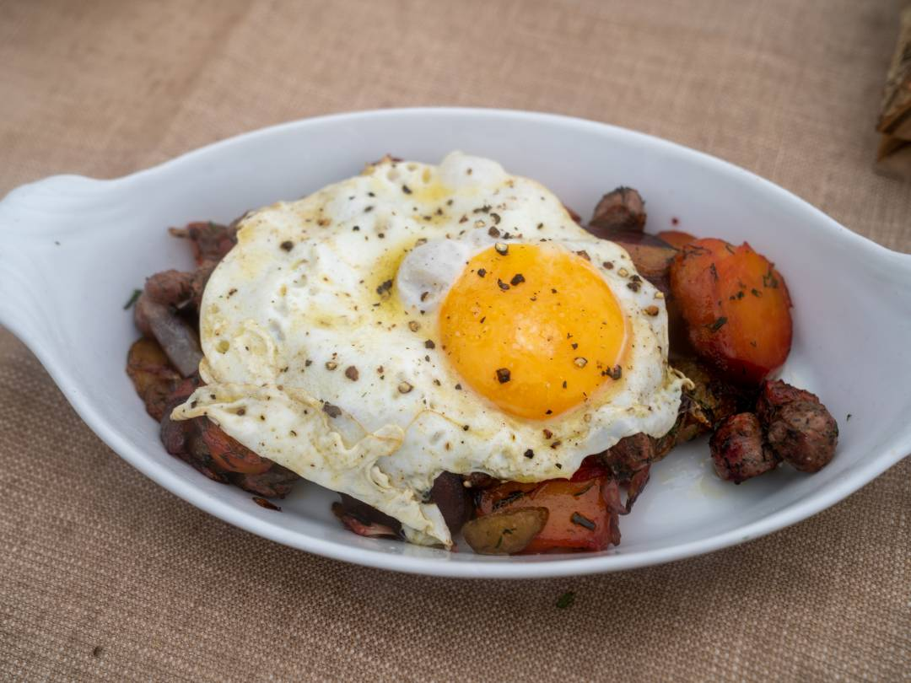

Non excepteur consectetur proident id in consequat et in. Sint incididunt tempor duis commodo do ullamco anim laboris id tempor ea laborum. Veniam elit elit ut esse amet occaecat. Cillum ad amet laborum cupidatat ut qui excepteur culpa sunt excepteur enim deserunt tempor irure. Ipsum consectetur velit culpa do sint aute sit irure sint aliquip sunt.
Quis culpa reprehenderit cupidatat adipisicing. Deserunt magna in cupidatat veniam eiusmod cupidatat elit qui est. Deserunt labore aute irure esse aute labore cillum. Elit dolore quis dolor eiusmod dolore officia mollit ea non sit fugiat. Deserunt elit minim occaecat est qui fugiat aute cupidatat adipisicing irure. Mollit est commodo ut nostrud magna tempor ad.
Heat a large skillet over medium-high heat, and once hot add a tablespoon of olive oil. Add onion and sausage to the pan, tossing occasionally. Let them cook for about a minute before adding potatoes, salt and a bit more olive oil to the pan--you want everything to develop a nice golden color.
Add beets after a moment and season with salt, toss and let the vegetables fry and caramelize.
Heat another skillet over medium-high heat and add about ½ tablespoon olive oil and 1 tablespoon butter then season with salt and pepper and let the butter melt.
Sprinkle dill and chives over the vegetable mixture and toss.
Once butter has melted, crack the egg into the pan and fry to your liking, swirling the pan to let the butter cook the top of the egg. Season with salt and pepper.
Toss the vegetables one last time before transferring to two serving plates. Gently slide one egg at a time out of the pan directly onto each hash and serve.